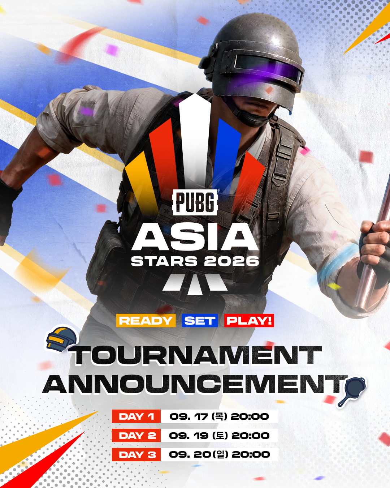
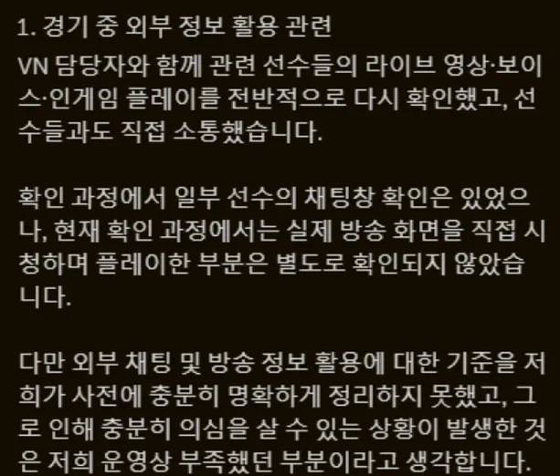
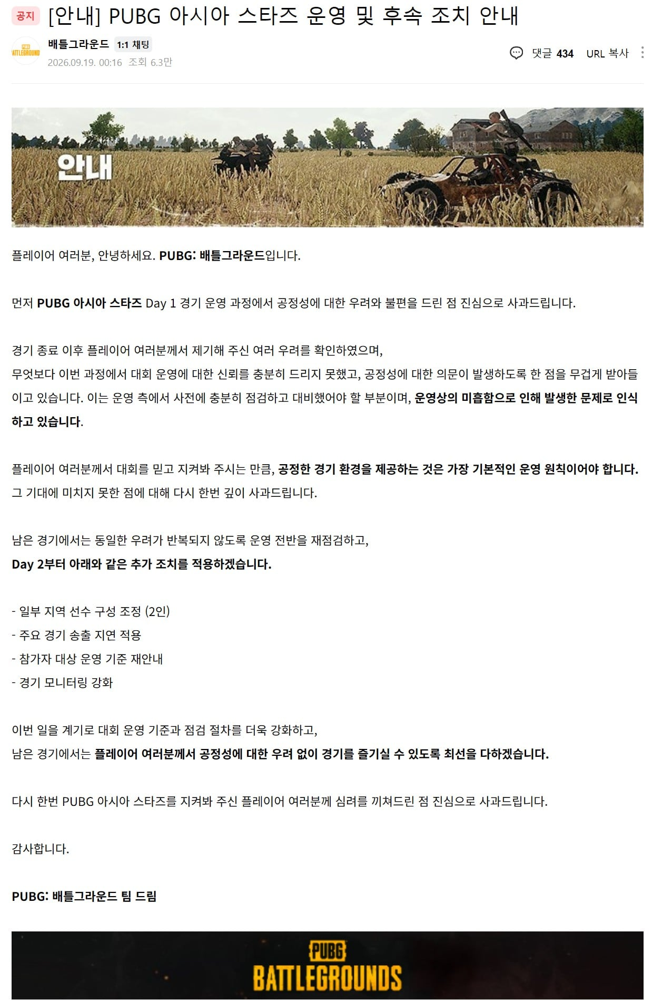
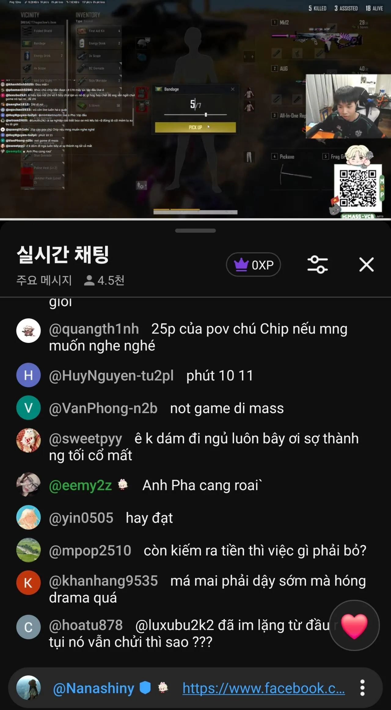
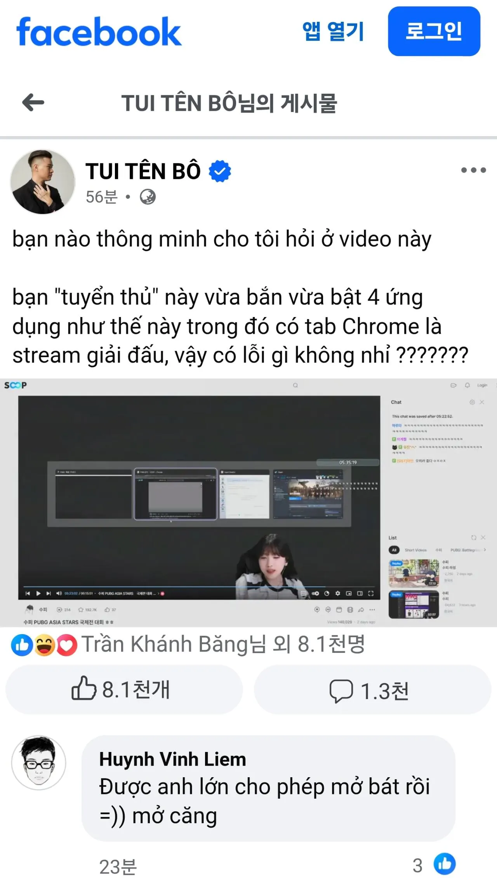

잠이 하도 안와서 괜히 적어본다
길다 천천히 읽어라
개요
아시안 게임을 모티브로 하는 PUBG 대회로
총 1억의 상금을 걸고 6개국이 참여하는 큰 규모의 지역 대회임

1. PUBH Asia Stars 매치에서 Himass/TanVuu의 방플 의혹이 발생함.
당시 베트남 선수들의 지나치게 빠르고 정확한 판단을 이상하게 여겨 의혹을 제기하였다
한국팀의 수와 위치를 아는듯한 정확한 푸쉬
이후 정확한 추가 타겟 선정 및 섬멸
[ Soopi님 영상 - 당시 의혹 상황 및 진실 ]
2. 방플 의혹에 대한 미적지근한 대응
PUBG에서 [부정행위는 확인되지 않았다]는 답변이 오고
더불어 정확한 규정을 전달하지 못했다며 혼란만 야기시켰다

3. 베트남측 팬들의 2차 가해와 PUBG의 4과문
여기서부터 베트남의 Soopi를 향한 2차 가해가 시작되고
동시에 PUBG측의 4과문이 개제된다
자신들의 운영 미숙으로 공정성을 지키지 못했다는 것이 주 내용이다
선수 2인의 인원조정 내용도 포함되어 있으나
사유기재도 없이 어영부영 넘어가려는 태도다

4. Himass/TanVuu의 초기 대응
Himass는 자신이 컨디션 이슈로 이탈하는 것으로 어영부영 넘기려 했다
TanVuu는 베트남팀을 대표하여 성명문을 올렸다
시청자와의 소통 중 의도치 않게 정보를 얻는 상황이 있었다
해당 행위가 악영향을 미쳤을 듯 하다
다만 이것이 금지된 행위인지 몰랐다
는 내용이다
해당 성명문은 변명에 가까웠고 사과문으로 보이지도 않았다
5. 한국팀의 보이콧
이와같이 난해한 PUBG측 대응과 역겨운 당사자 대응으로
한국팀 전체가 대회를 보이콧 하기에 이른다
PUBG는 한국팀을 제외하고 대회를 강행
그와중에 한국팀의 불참사유를
보이콧이 아닌 참가 철회로 표기하는 기행을 보여준다
6. 해당 상황에서의 Himass 팬들의 2차 가해
그런와중 Himass의 개인 방송에 Soopi도 방플을 했다는 의심글이 고정으로 잡히고
Soopi는 단지 창이 4개였다는 것을 근거로 (배그,스팀,방송용제어프로그램,크롬) 공격을 받아
이때를 기점으로 사건은 크게 공론화 되기 시작한다
Himass는 이후 해당 고정글은 자신이 아니라 자신의 매니저가 한것으로 보이며
Soopi에 대한 공격을 즉각 중단해달라고 발표 했으나 많이 늦은감이 있다

[개인 방송에 Soopi 저격글을 고정으로 달고 있는 장면]

[해당 고정글에서의 의심 정황 내용]
캡처 내용 :
똑똑한 사람 있으면 하나 물어봅시다.
이 영상에서 이 ‘선수’라는 사람은 게임하면서 이렇게 앱 4개를 동시에 켜놓고 있는데,
그중에는 대회 중계를 틀어놓은 Chrome 탭도 있네요.
이거 문제없는 건가요?
댓글
높으신 분들이 켜도 된다고 허락했잖아 :) 그러니까 더 켜야지
Soopi는 이에 대해 굉장히 충격을 받고
따로 해명하며 현 사태에 대한 입장을 밝히지만
그런건 베트남인들에겐 별로 중요하지 않았던 것 같다
아래 영상이 추가 증거라는 배트남인들도 있다.
푸쉬당할때 핑을 찍으면서 "상대 3번이야" 라는 것을 가지고
[3번 팀인지 어떻게 알았냐]라는 사람들이 있는데
이건 당연히 [3번 핑에 적이 있다] 라는 뜻이다
7. 대회 취소
대회 취소 결정이 나온다.
이후 각종 4과문이 올라오게 되고
거기서 처음으로 Himass, TanVuu의 방플에 대해 직접적으로 언급한다.
이후 Soopi가 받고있는 피해에 대해 무거운 책임을 느끼며
법적인 최대한의 지원을 하겠다는 사과문을 올린다.
8. Himass / TanVuu의 영구 퇴출
Himass와 TanVuu는 PUBG에서 영구 퇴출 당하게 된다.
추가 - 베트남에서의 무허가 운영설 ( 사건과는 무관 )
이 소식들이 크게 이슈가 되게 되는데
근데 Steam이 금지인데 PUBG(PC)는 어떻게 하고 있었냐? 라는 얘기가 나오고
그동안 암묵적인 영역이였던 Steam의 무허가 이용에 대한 내용이 재점화되어
베트남 정부는 Steam의 불법 이용을 색출해내겠다는 뜻을 내비쳤다
아직 진행중
이후 해외 커뮤니티에션 베트남인들을 중심으로 여론이 확산됐다
주요 쟁점은
- 방플이 하면 안되는건지에 대해 제대로 말하지 않았다
- 방플을 한거여도 영구 퇴출은 너무했다
- Soopi도 방플했다
를 가지고 얘기하고 있다
초반의 해외 여론은 [영구 퇴출은 너무했다]부분이 압도적으로 받아들여지는 분위기 였는데
뒷 얘기도 어느정도 퍼다 날라지고 나니 현재는 여론이 역전되는 중이다
주장 자체는 전체적으로 받아들여지지 않았지만
전체 사정을 알고도 그럼에도 영구밴은 너무했다는 여론도 아직 건재하다.
+++++ 추가
https://cafe.naver.com/playbattlegrounds/6285121
근데 시발 Himass 본계정이 영정해제 됐다는 얘기가 있다.
뭐 본계가 영정해제되도 어차피 E스포츠 퇴출이니
선수 생활은 끝난게 맞긴 한데 어이가 없네 시발
아직 제대로된 답변이 없는거같다
https://gall.dcinside.com/board/view/?id=dcbest&no=465758
근데 시발 베트남 새끼들이 이거 너무함 에바임 하고 150만 서명을 했단다
근데 시발 Himass 소속팀에서 징계 부당하다고 항소도 했단다
시발 아주 그냥 잘 돌아가네
정리 추
그리고 베트남 소속구단 뭐 폭로글도 있지않았음?